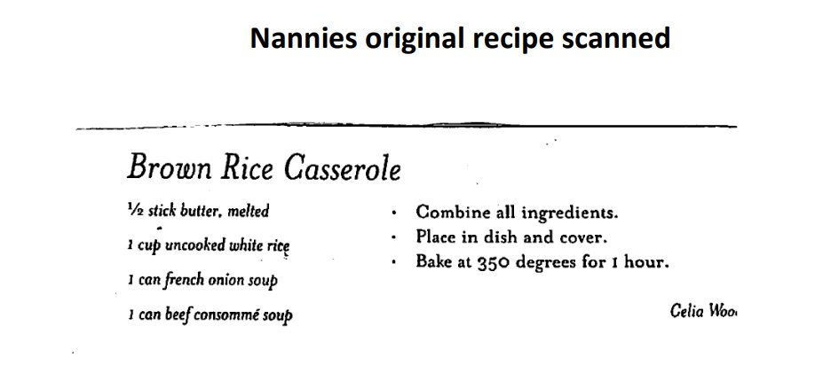

These Southern side dish recipes from Grey’s Cook Book include classics like mac and cheese, baked beans, mashed potatoes, and family favorites passed down through generations.
Everything that rounds out the plate
Spray crock pot. Mix up all ingredients, reserving 1 cup of cheese. Pour into crock pot and sprinkle the reserved cup of cheese on top. Cook on low for 3 hours.
Drain the can of beans. Brown the sausage and onion in a skillet. Pour beans into an aluminum pan. Mix in sausage and onion with grease. Pour Cattleman's evenly over the top and spread a thin layer of brown sugar. Stir and taste. Add more Cattleman's or brown sugar if necessary. Cover with foil and bake at 325°F until warm, about 20 minutes.

Nannie's original recipe — Celia Wood
Combine all ingredients. Place in a covered casserole dish. Bake at 350°F for 1 hour.
Cut bacon with scissors and fry in a cast iron skillet. While bacon fries, slice cabbage into thin strips. Add cabbage to pan with water, salt, and pepper to taste. Cook covered for 30–40 minutes. It gets sweeter the longer it cooks. Stir occasionally.
Mix the green beans, soup, sour cream, and half the French fried onions together. Pour into a casserole dish.
Bake at 350°F for 20 minutes. Remove from oven, spread the remaining onions evenly over the top, and bake for another 5 minutes until the onions are golden and crispy.
Add all ingredients to a pot. Boil until everything is soft, 30–40 minutes.
Slice the potatoes and onions no more than ½ inch thick. Place in a cast iron skillet with about an inch of oil — enough to coat but not submerge. Cook on medium-high until the oil bubbles, then reduce heat. Cook until the potatoes are soft. Add Dale's and butter at the end for extra flavoring.
Cut bacon with scissors and fry. Add lima beans straight to pan and cover with water. Add a dab of butter, salt, and lots of pepper. Cook uncovered for about 20 minutes.
Boil potatoes until soft. Drain off water. Add remaining ingredients and mash with a fork or potato masher. I like to serve mashed potatoes thick and lumpy so it's almost a creamy baked potato. If you want them creamier, use some milk and a mixer.
Melt butter in saucepan on low. Add lima beans and salt to taste; cook for 20 minutes. Add tomatoes, corn, and sugar; cook until warmed through, about 10 more minutes.